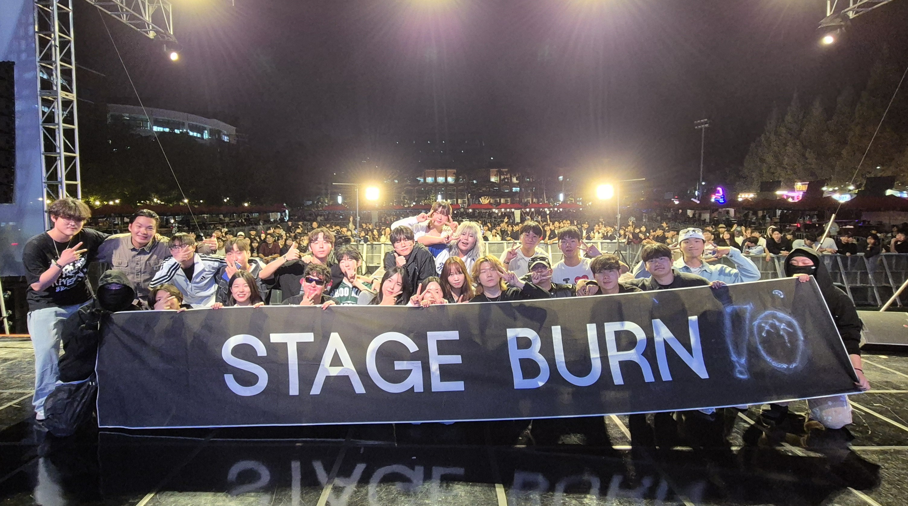
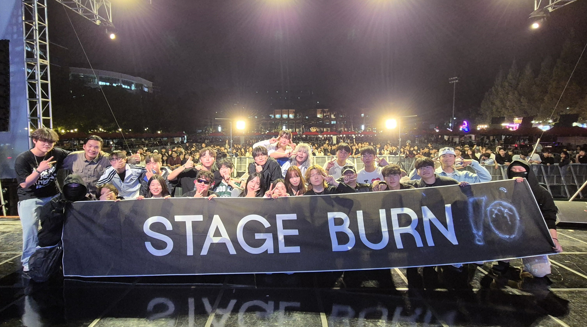

STAGE BURN
한경국립대학교 유일 힙합 동아리
HipHop 및 R&B 곡을 커버하고, 창작하며
다양한 음악 활동을 하고 있습니다.
'자체 제작 동아리'라는 타이틀을 가지고
비트 메이킹, 녹음, 믹싱을 통해 음악을 제작하는 활동을 합니다.
다양한 음악 활동을 하고 있습니다.
'자체 제작 동아리'라는 타이틀을 가지고
비트 메이킹, 녹음, 믹싱을 통해 음악을 제작하는 활동을 합니다.